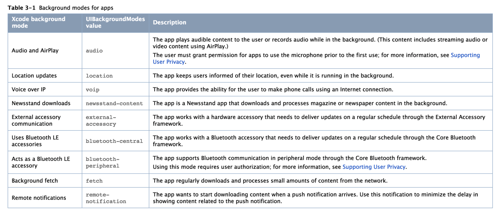
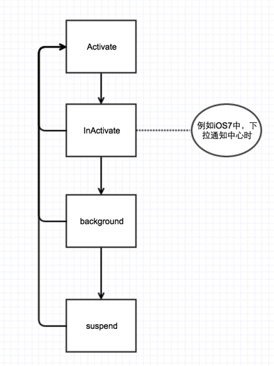
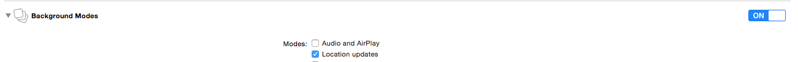
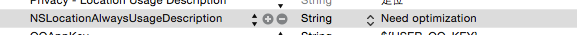
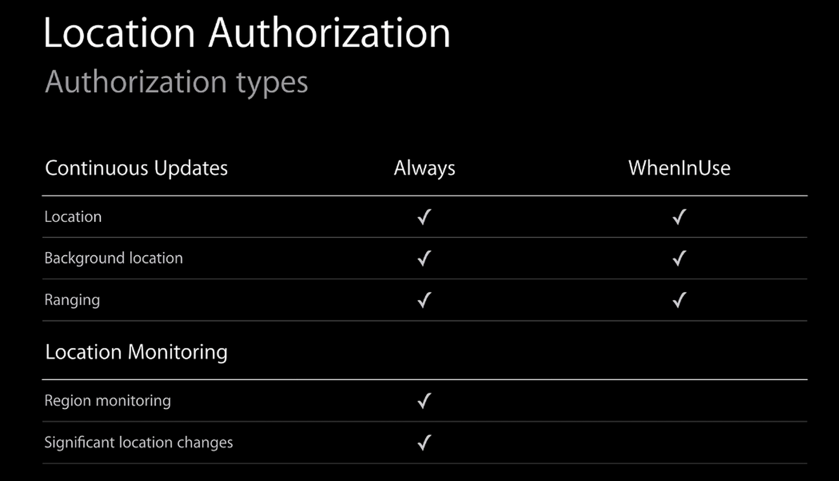
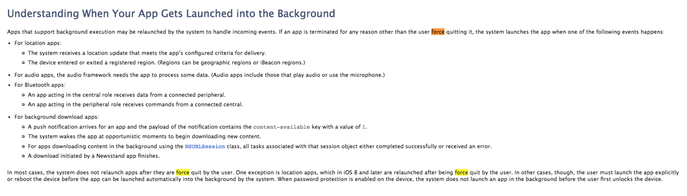

前言
详细的说明可以参考Background Execution
在APP不支持background mode的前提下，点击home之后，会进入background state，接着经过短短几秒后，会进入suspend state。
iOS提供了一些后台运行的权限申请，用以保证特定场景下的后台执行需求。截止iOS9，所支持的权限如下表：

一般情况下，如果仅需要在进入后台的时候额外做一些操作，则不需要申请这些后台权限，仅需要执行一个long-runing task即可。
示例代码：
|
|
生命周期
首先需要明确APP的一个生命周期

Activate
APP处于前台，接受UI的点击事件
InActivate
APP仍然处于前台，但不接受UI点击事件
Background
APP处于后台，此时APP完全属于不可见的状态，比如点击home键之后，即进入了background state。此时应用仍然在运行，所有代码均可执行。
suspend
挂起，此时iOS会存储当前应用的执行状态，接着释放掉对应的资源。
iOS后台运行机制分析
介绍完基础知识，开始进入正题。先从实践入手，目前使用了CentralManager mode和Location update mode两个后台使用权限。从这两个后台模式碰到的一些现象，来尝试分析iOS是如何完成后台运行的。
Location update
准备工作
Step1.首先做好后台的配置，先在Xcode的capabilities中勾选对应的选项

Step2.接着在plist中添加NSLocationAlawaysUsageDescription

完成这两步才算完成了后台运行的基础。
Step3.接着还需要在代码中调用requestAlwaysAuthorization，才算完成了对后台更新location的申请。
为什么需要做这些配置呢？
iOS默认是不支持后台执行的，为的是能够将更多的资源集中在当前运行的应用上。因此需要有step1.运行权限的配置。
在iOS7之后，对于location的使用，提供了两种模式Always以及WhenInUse，从命名上也很容易明白，Always即任何情况下都可以使用，而WhenInUse则是在应用开启的时候允许使用。
下面一张图会看着比较清晰

两者的区别无非是对于Location Monitoring的使用权限。那么这两个东西分别是什么鬼？Region monitoring，是对一个进出某一个区域的检测。对应的方法是startMonitoringForRegion:。我们可以使用CLRegion设定一个圆，在位置进出这个圆时，会调用didEnterRegion以及didExitRegion的代理。Significant location changes，是苹果为了电量的优化做的定位策略。对应的方法是startMonitoringSignificantLocationChanges。
摘抄API的描述文档：
|
|
从以上的描述得到两个重要信息，
- 这个方法可以在app terminate的时候重启app使其进入后台模式
- 这个方法只有在运动了500米并且已经过了5分钟，才会执行一次定位
从这个描述里，我们已经嗅到iOS的后台运行机制，它不仅仅是保持应用在后台执行。
接下来我们做个试验：
定义个BMLocationManager
|
|
在初始化的时候直接执行定位：
|
|
在didUpdateLocations的代理里加上locationNotification方便查看log。
|
|
在模拟器app启动之后，点击home键进入后台，在debug->location下选择freeway-drive。（注意不要使用使用调试模式，在这个模式下app是不会被系统杀死的，和真实环境会有所出入。）
我们会发现，会不停的有location通知，然而挂着足够长的时间（可以跑这个应用让系统内存压力杀死其他app），发现通知停了，打开app一看，经历了闪屏，说明应用被杀掉了。
因此，在这里可以进行一个猜想，使用background mode并不能保证应用不会被系统杀死。
那么location update的后台执行到底是怎么实现呢？我们来看看startMonitoringSignificantLocationChanges的方式。
既然API文档说在应用被终止时会重启app，并且调用didFinishLaunchWithOptions的代理，那么我们就在appDelegate里加上一个notification来做验证
|
|
更新app，再次启动，接着直接杀死。发现确实调用了appDelegate。那么这个启动过程和一般的启动过程有什么不同呢？我们利用hook，在viewController里增加log，看看其调用过程。
log的配置使用了Aspects这个基于AOP的第三方框架。
AOP的方式在这类验证性的工作是非常有帮助的，保持了原有代码的整洁性。
|
|
接下来再次执行相同的步骤，看看log都输出了些什么？
发现一个viewController的完整生命周期都输出了。说明在后台启动的时候，并没有走什么特殊通道，而是按照正常的流程一直到等待UI输入的步骤。因此我们的app如果需要实现类似的后台运行模式，那么app delegate的设计就需要考虑到后台运行的情况了。
接下来再看，应用后台启动之后，我们手动打开app，又发生了什么事？
app又调用了闪屏，查看log，发现又重新来了一次启动流程。查看application的地址，发现不是同一个地址，说明手动开启app之后，系统把后台启动的应用给释放掉了。
小结
在location mode的后台执行模式下，应用并不会常驻在后台，而是与普通应用相同，随时会被killed。
想要达到类似常驻后台的效果，需要使用startMonitoringSignificantLocationChanges方法，在更新location时，系统会重启应用，使其处于后台模式。
应用启动时，与正常启动直到等待UI输入的流程无异。
tips
蓝牙
在调试蓝牙后台时，需要验证是否真的唤醒了APP，但是调试模式下没办法进入suspend的状态，而双击home健手动杀掉进程，也同样不会唤醒APP，此时连蓝牙也会立即结束。因此需要进入suspend状态时，可以使用kill(getpid(), SIGKILL)方法模拟系统因为内存压力等原因结束进程的方式
APNS
APNS需要在content-available为true，并且开启remote-notification的时候才会支持后台模式
当iOS收到一条push消息时，如果payload里包含content-available = true，那么会发生下面的事情
- 如果app处于suspended状态，那么系统会把app置为background状态
- 如果app是是通过app switcher的方式被用户杀掉了，则不会启动app
关于后台启动
后台启动根据不同的模式也会有不同的区别，一般情况下，只有应用处于suspended状态下的时候，才能够启动为background，对于force quit的应用，是不会生效的。目前来说，唯一例外的只有iOS 8之后的location模式会启动应用
